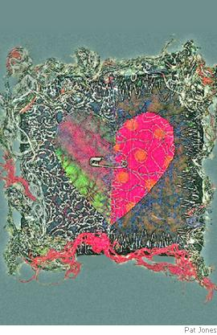

Poems
A selection by Stephen Edgar
The Annexe
A small lit room,
With the undistinguished furnishings they love,
That Afghan rug of intricate design
You seem to be looking down on from above
At some great height — and, should the camera zoom,
The vistas, worlds, on hold
Within that pattern, line by woven line,
Would open and unfold.
The television,
With sound turned down, is flourishing its phantoms,
A synopticon in time-lapse of the ages
Where history can perform only in tantrums
Too quick to take in. Free of such misprision
A subdued music plays
Its tireless permutations and upstages
Time in more subtle ways
Philosophers
Would weep to hear. The windows are all blind
Now that the blinds are drawn, but on the walls
Their memories are suspended to remind
Whoever turns to look there what occurs,
Even without a viewer,
The moments that each pictured scene recalls
That somewhere may endure.
Two heads of hair
Above the sofa back they rest against
Are tilted to each other, where they grant
The omniscient narrator all that’s sensed
Between them unobserved, all that they share,
To which the words they use,
These worn-out whispered nothings, are the scant
And ineffectual clues.
Outside the door,
Cold-lit and cold, the edifice is still,
Without a voice. The passages and stairs
Wind through the middle of the night until
Their pattern and the night are ever more
Inwoven, seen as though
From some great height, at which one scarcely dares
To gaze for vertigo.
Paris
“A film can be about Paris, but Paris is not about anything.”
Yes, yes, I know: it’s Paris. Neatly sliced
A little way below the summit, rises
The steely fabric of the Eiffel Tower,
Flanked, or it seems to be from this perspective,
By two elaborate flagpoles, each one decked
Halfway with some excrescence that may be
A giant flowerpot, or conceivably
A mounting for loudspeakers, if they had
Loudspeakers then, in 1889,
And at the top, a tricolour in the form
Of a forked pennant flexing in the breeze
Like someone dangling there and hanging on
For dear life, kicking desperately in air.
A smudgy white and fairytale pavilion,
Positioned near the tower’s base, presents
The focus of the scene, to which the crowds
Are streaming from both right and left, well wrapped
Apparently against late autumn cold.
Some of the trees, young planes perhaps, are still
Quite densely leafed, though that can hardly be
In view of how advanced the season is;
But on the other hand at the far left
There is a tree that’s almost bare. The sky
Is blanked out by a quilting of chill grey
And vaguely threatening cloud. What’s it about?
Come on. No jokes. Don’t say: “It’s about to snow.”
Don’t tell me it’s about three forty-five.
Do not inform me condescendingly
And with exhausted patience: “About Paris.”
Or put it this way. In the north Atlantic
So many miles from land that land might well
Have never been, an outcrop of dark rock
Juts minimally, intermittently,
From massive surges of sea swell, from smacks
Of shattered and collapsing waves and walls
Of storm-built ocean water. In the day’s
Last flourish spume and spray climb up and up
And hang as though absolved from gravity.
Across a fissured butte in Arizona
A wingèd shadow glides, time and again
Nicked, bent and twisted by the transverse cracks
That score the scarlet rockface in the sun.
(The poem refers to the painting Entrance to the the Universal Exhibition, 1899 by Jean Béraud)
The Transaction
There. There it was just then in that split second.
So transient, so fit to miss,
Like an infection floating on a cough
Or swimming on the lip gloss of a kiss.
Something in her expression beckoned,
He spoke the words and, breaking off,
They found in her their metamorphosis.
Now, as she walks away, what he recalled —
Still hidden like the blue tattoo
Of a hummingbird that flutters underneath
Her restless skirt — is starting to imbrue
Her memory, instantly installed
With imagery to bequeath,
Dimensions that are hers to wander through.
She could dance blindfold through that house. Her throat
Begins to tighten when that name
Is merely spoken and her eyes grow wet.
She feels the outrage move her to exclaim,
Knowing that rogue survives to gloat.
She shares the joke she didn’t get.
She sighs and sees that day go down in flame.
Without a second thought or least suspicion
She threads the network of the streets
As ever, beckoning and beckoned to,
The courier of everyone she meets.
And he who passed on this commission
Has the same business to pursue,
Outlays forever balanced by receipts.
Who knows? In this assignment one brief message,
One simple picture has descended
Beyond imagining, almost unchanged,
From the first word and, almost unamended,
Will bear its chronicle and presage
Until the earth itself’s estranged
And the passage of the swollen sun is ended.
How Long Have You Been Having These Feelings?
So I made it to the portal
And stopped to rub my eyes.
Here was the guy who would immortalize
The cure for mumps with bracken.
I checked him off my list:
Astral adviser and tobacconist.
His name plate was the rebus
Of an untranslated quote
In neon from the end of the Liebestod,
Flanked and borne up by hatted
And handbagged parodies
Of Kath and Kim as caryatides.
“Remind me to forget it,”
I thought. “My mind’s a sieve.
This game’s becoming too competitive.”
I had to grope the doorman
Before he’d let me past
And stepped from Mother’s Day to Gormenghast.
He was acting like a madman
Doing salsa with a desk.
His stance was Wildean, wit Bradmanesque.
“Is this the place?” “Who’s asking?”
“It’s me. Consult my nape.”
He scribbled something down on masking tape
And, reaching for me slowly
(Could he really move so slow?),
He stuck it on my blue portfolio
And said, “Now wait a minute.
Pick a number between three
And the left-hand square root of infinity.”
I bluffed, “How about a googol?”
“Pass, crow. When you’re reborn
I’ll play it for you on the flugelhorn.”
As I stumbled down the hallway
I heard the doorman shout,
“He makes appointments but he’s always out.
But if you’re very very
Lucky — lucky as sin —
You just might find his secretary in.”
She was. The chair she sat in
Swung round. “Well, I am vexed.
I can’t make head or tail of this Latin text.
Do you have the tongue?” “I’d rather
You didn’t ask,” I lied.
“It brings me out in hives since my father died.”
“I’m sorry to embarrass
A man of pure intent,
Subjecting him to textual harassment.”
I was hot under the collar
And my cuffs began to drip.
“How do you rate on pluvial scholarship?”
She reached for the weather index:
“Hmm. Inventory of rains
With references that the wind explains.
Ah: ‘Hung from its isohyets
Like curtains, rain as yet
Is silent on the question why it’s wet.’”
“That so? You’re quite a wonder —
So much at your command.”
I hoped she’d think that I could understand.
“I’ll set you one more challenge,”
She said, “you may prefer,
Unless you’re shy as J D Salinger.”
She had some mole — or freckle —
That she asked me to inspect.
It took some finding, as I recollect,
And a good deal of laughter
From her — buttons and cords —
And a long time in the bathroom afterwards.
“Is this,” I asked, “all licit?”
And she replied, “Why, sure.
My pulse was checked by the solicitor.”
Then she rubbed me with her flannel
And grabbed me by the wrist
And said, “Report me to your analyst.”
The Red Sea
Lulled in a nook of North West Bay,
The water swells against the sand,
Hardly more liquid than Venetian glass,
In which clear surface, just a little way
From shore, some four or five petite yachts pass
With languid ease, apparently unmanned,
Adrift along the day,
Imagining a breeze to fan
Their motion, though there’s none. Siobhan
Reaches a giant hand down from the sky
And nudges with insouciant élan
The nearest hull, her bended waist mast-high.
That hand is just as magically withdrawn.
So moves the catamaran.
And through the Lilliputian fleet
She, Beatrice and Gabrielle
Wade in the shallows, knee-deep, spaceman-slow,
To fashion their manoeuvres and compete
Among the stationed hours to and fro,
While watching through the viscid slide and swell
Of water their white feet,
Made curiously whiter by
That cool light-bending element.
Doubled by shadows on the sand they glimpse
Pipefish and darting fingerlings they try
Impossibly to grab, translucent shrimps
Among the lace weed, seahorses intent
To flee the peopled sky.
Hard to conceive that they should be
Precisely who they are and here,
Lost in the idle luxury of play.
And hard to credit that the self-same sea
That joins them in their idleness today,
Careless of latitude and hemisphere,
Blind with ubiquity,
Churns elsewhere with a white uproar,
Or wipes the Slave Coast clean of trees,
Or sucks among the scum and floating drums
Of some forgotten outpost founded for
The advent of an age that never comes,
Or bobs the remnants of atrocities
Limply against the shore.
What luck they have. And what good sense
To leave the water with their toys
When called, before their fortunes are deranged.
And still the day hangs in its late suspense
For hours without them, virtually unchanged,
Until the bay’s impregnable turquoise
Relaxes its defence
And sunset’s dye begins to spread
In flood across it to the sand
They stood on, as though, hoping to disown
The blood of all the innocents he’d shed,
Macbeth incarnate or his grisly clone
Had stooped on some far shore to rinse his hand,
Making the green one red. [ First published in Australian Book Review ]
Tralee
And later, wondering, “Can this be true?”
I looked out at the night to scan
The alphabet of stars we stood beneath,
But could not read. This took me unawares.
I heard you giggle as you cleaned your teeth
And say, “There is a naked man
In my kitchen.” I might have quipped to you
If I’d been quick, “Well, don’t look now, but there’s
A naked woman in your bathroom too.”
We found a lot to laugh about. Recall
My joke and your hilarity
About the Englishman who asked his way
Of an old man in Kerry, who replied:
“Well now, if I was goin’ to Tralee
I wouldn’t start from here at all.”
Long into that first luscious night we lay
And talked, and more than talked, there side by side
In moonlight, with the quilt thrown back, asprawl
And stroking, and your streaming hair was wide
Across the pillow and my chest,
And underneath its fall our lingering lips
Kept meeting and exchanging what they met,
And my hand laid its weight between your hips.
My little life was soon expressed,
And I was happy to hear you confide
And sad to find how soon your eyes were wet
And happy too to kiss them till they dried
And in my shoulder’s crook you laid your head
And slept, and I’d have slept but who
Would sleep when he could watch your sleeping face,
And hear your murmured breathing. But the fact is
Face value is just that and leaves no trace.
I took all that you said as true
But what is true is more than what is said,
And maybe after all your years of practice
Your body’s mastered how to lie in bed.
But that sounds bitter. Pardon me. Why blame
A woman who right from the start
I saw could not be good for me but still
Desired so badly you might well assert
That I conspired with you to break my heart.
Well, not a charge I would disclaim.
The fact is the explanation, and you will
Do what you wish. No point in crying hurt.
We know there are no rules in the great game.
No rules, but consequences should be clear.
To hear on that last morning your
Last words, “Think of the good things, let’s be friends,”
As though a wounded heart’s a frippery,
As though love’s really ended when it ends.
The path we took was no detour.
There is no other way. And oh, my dear,
If you still think that we might reach Tralee,
The truth is that we cannot start from here.
[ From the sequence “Consume My Heart Away” in the collection Other Summers ]

The Kiss
How can she do this now that it’s all changed,
Present her lips to kiss
As though that known face were the same as this
From which you’ve been estranged?
Of course it is. Here, now? Or then and there?
How can she sit down in her cloud of hair
And watch you as though you were someone else?
You are, of course, to her.
You were this rendezvous’s commissioner
And nobody compels
Your self-distressed attendance here but you.
So watch her do as only she can do.
She lifts her left hand to her left earlobe
And tugs the earring, slides
The hook half out and rubs at it and glides
It in, as its purple globe
Swings back and forth to tantalize your sight.
Soon she will do the same thing with the right.
A silver bracelet rides along one arm
Or settles at the wrist,
And lest adornment should seem prejudiced
The other has its charm
As well, made somehow perfect by the dent
That mars the curve of its encirclement.
And those two combs holding her hair in place,
Two combs of tortoiseshell —
And when she took them out, oh how it fell
At night around her face,
Which she would lift to you and shut her eyes,
So beauty came to seem beauty’s disguise,
And whether by desire or candlelight,
Her skin took on a glow,
An alabaster lucency, and so
She leant back to invite
Your open-mouthed assent. And you would hold
That pose like two Klimt lovers cloaked in gold.
And that first night you slid the purple shift
Over her shoulders and
Peeled gently downwards, leaving her to stand
In Aphrodite’s gift,
And sinking with her garment to the floor,
Made moist the shadowed fold you knelt before.
How can she do this now that you’re estranged,
Stand in her cloud of hair
As though she were the same, though well aware
That everything is changed
(Of course she is), presenting for your kiss
The mouth that was the mouth that is not this.
[ From the sequence “Consume My Heart Away” in the collection Other Summers ]
Incident at Grantley Manor
(Recorded reading by Stephen Edgar from his CD Photography for Beginners, used here by courtesy of Carol Jenkins, River Road Press)
Seven o’clock, the time set in his mind
Like herbs displayed in aspic, as the chimes
Were striking. Then the squeaking of his shoes’
Black leather tread, pacing those measures down
The first-floor hall, where sunset’s apricot
Was oozing nectar through the open doors.
Her voice, conspiratorial and astonished,
Called him across the bedroom’s drowning cube
Towards the window. How well Miss Waterson
Remembers it: “Please come and look at this,
Mr Devine;” the clock on the mantelpiece
Rehearsing for the hour of seven. She pointed
Down. There, a moving picture on the lawn,
His father, like a patient whose long months
Of immobility meant learning afresh
The art of walking, climbing the light’s green slope
Towards the summer house, looking intently
As though for a cuff link or a signature.
That evening he still thinks of, lying now,
No longer needing lessons for his legs,
How he cast back his glance and saw the windows
Blazing like cats’ eyes on his uselessness,
And in that golden mirror, two gold figures
Recording him, two shadows of dark gold —
Miss Waterson (was it?) and another one —
And then took out his watch on which the hands
Were so meticulously assembling seven.
Young Emily, appointed just the week
Before, came rushing to the stairs — she’d seen
Him stumble — to advise Mr Devine
About his father’s fall. And so, almost
Immobilized herself in that clinging syrup,
She observed the hall clock’s quaint rendition of
Seven, the time set clearly in his mind
Like summer herbs in aspic, as the chimes
Were striking. Then the squeaking of his shoes’
Black leather tread, pacing those measures down
The corridor, where sunset’s apricot
Was oozing nectar through the open doors.
Her voice, companionable but astonished,
Floated across the bedroom’s drowning cube
As he descended. How well Miss Waterson
Remembers it: “Please come and look at this;”
And Emily, who had just been taken on
That week, came rushing to the window. She pointed
Down, smartly on the stroke of seven. There,
A moving picture on the lawn, was old
Mr Devine, like a patient whose long months
Of immobility meant learning afresh
The art of walking, climbing the light’s green slope
Abstractedly towards the rose garden.
That evening he still thinks of, lying now,
No longer needing lessons for his legs,
How he cast back his glance and saw the windows
Glaring like cats’ eyes on his helplessness,
And in that golden mirror, two gold figures
Gesticulating, two shadows of dark gold —
The new girl (was it?) and another one —
And then took out his watch on which the hands
Were so laboriously assembling seven.
Miss Waterson, with Emily behind her
In a panic, dashed to the stairs to find
Mr Devine, anxious to let him know
About his father’s fall. And there they saw him,
Almost immobile in that clinging syrup,
And heard the hall clock’s muffled tolling of
Seven, the time set firmly in his mind...
[ From the collection Lost in the Foreground ]
Observations of an Attendant
The river surface, restless as a child,
Keeps shifting round its iridescent blues
In shirrs and stretch marks, quiltings which are styled
For nothing, or for what we choose to choose.
Would an alien be naturally impressed
By random lulls which here and there anoint
That creased expanse with their pooled oils, or
Imagine himself blessed
In watching the parched hump of Droughty Point
Slope to the water’s damage at the shore?
Abruptly up the dazzle-shivered fairway
From nowhere, faintly haze-veneered, arrives
A flight of gannets, wheeling through the airway
Their self-professing loops and sudden dives.
With syncopated, jazzlike intuition
And a white flash, they plunge in turn to feed
Through the crumpled current, rise and loiter there
In stranded exhibition;
And then on wings that less loft than impede
They heft their dripping bulks back in the air.
The watcher too is lifted — yet estranged
Behind the glass that changes what exists.
Here ranks of gamblers, safe inside, arranged
In concentration like telephonists,
Or programmers at terminals, intent
On serious work, play out their solemn rites
Of wish and habit, to the idiot-
Inspired accompaniment
Of electronic jingles, and bright lights
Which signal that reluctant, rare jackpot.
In their oblivious midst crumples unnoticed
Onto the carpet stretching under her,
In thoughtful silence, without fuss or protest,
Saving the etiquette of her milieu,
An ageing modest woman — a dead weight
To the attendants, eager for the chance
Of something to attend. Mild interest
Seems to reanimate
Some patrons in the nearer seats, whose glance
Flickers from her back to the keno, lest
They miss their winning numbers. How grey her face
Becomes, how artificial her drained skin,
How shocked her fearful eyes for the disgrace
She’s caused. But no: their look is turned within,
Withdrawn in some more private protocol
That has no need of comfort, soothing hands,
The flurry of official signs of care.
For she herself is all
The sign that she can read, and it demands
All of the concentration she can spare
In this lacuna in the afternoon.
And watching her, I listen with concern,
As a mother might, to my own breathing. Soon
The living colours in her face return.
She’s wheeled from view. The watchers all become
Immediately absolved of this brief farce
That went unwitnessed a few feet away.
That strange blue medium
Continues as before beyond the glass,
Assuming to itself the entire day.
Gulls dressed in their immaculate livery
Practise towards a strident unison.
From here out to the smeared periphery
The river’s blank. Those gannets are long gone,
Taking their appetites to other regions.
The mountain’s top fades in a veil of light,
Ruled off by shadow, with a chiffon scarf
Of cloud. A flock of pigeons,
Wheeling, turns on and off again in flight,
Flashing their presence like a heliograph.
[ From the collection Lost in the Foreground ]
Penshurst
Sometimes we’d wander half-day holidays
Licensed as in a dream to roam at large,
Through afternoons of Empire Days, or those
More mundane times when we’d wag school, a friend
And I, and ramble home circuitously,
Traipsing the mid-hours of the suburbs, when
They’d sunk into their fabled lifelessness,
The great Australian emptiness: the men
Away at work, the faceless wives indoors,
Possessed by their invisibility,
Streets in suspense, deserted like a scene
From The Quiet Earth, apart from some roused dog,
The grace notes of the birds, mad Geiger-counting
Of cicadas (it seems always summer),
A Hill’s hoist thinly shrieking, and hidden away
Somewhere behind the streets the intermittent,
Companionable clatter of the trains —
That rataplan I’d often lie awake to
Late in the night in bed, muffled far off,
A goods train from the south that never seemed
To arrive, pass or recede, but simply hung
Its soporific rhythm’s interminable
Comfort across the wide deceptive miles —
And the reassuring weight of houses, safe,
Repeated like a children’s story, always
The same, their modest privacies behind
Net curtains intimately suggestible,
Indifferent; and all of it so far
From any need to happen or explain,
Be puzzled over or be otherwise.
[ From the collection Where the Trees Are ]
Stephen Edgar’s 2006 collection Other Summers is available from Black Pepper Publishing, who will publish his new book History of the Day in April 2009. A selection of poems from each of his books is available at Stephen Edgar’s personal website, www.stephenedgar.com.au, along with some prose essays and links to other sites with writing by and about him.
|